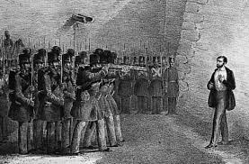
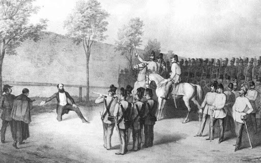
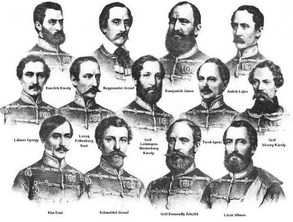
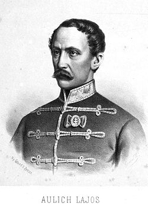
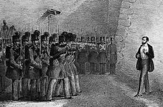
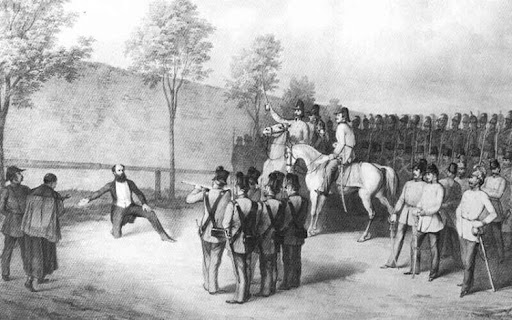
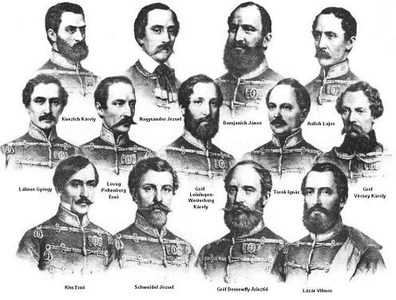
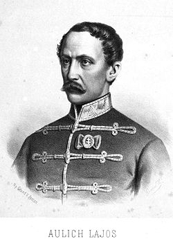
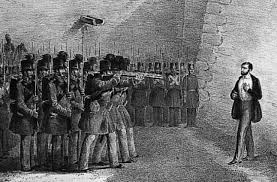
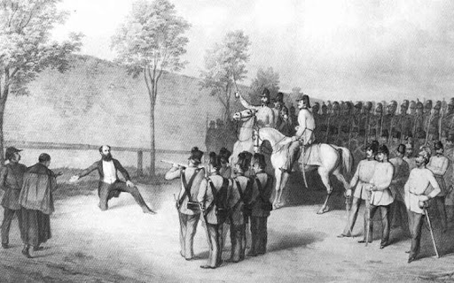
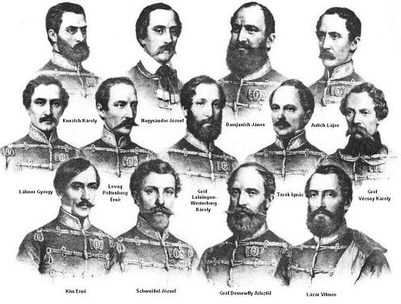
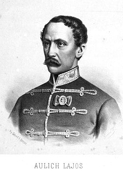
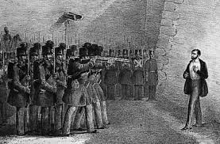
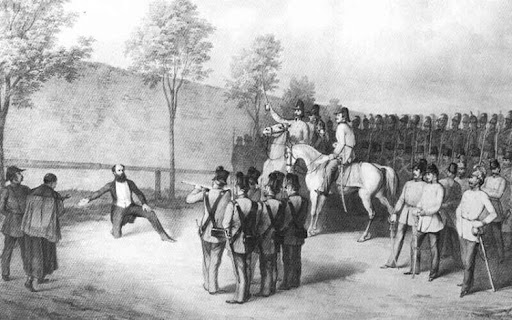
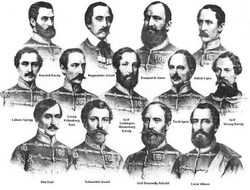
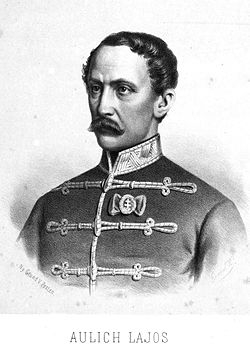
Szolgáltam, szolgáltam, mindig csak szolgáltam. És halálommal is szolgálni fogok. Forrón szeretett magyar népem és hazám, tudom, megértik ezt a szolgálatot.
Aulich Lajos
Az aradi vértanúk azok a magyar honvédtisztek voltak, akiket a szabadságharc bukása után az 1848–49-es szabadságharcban játszott szerepük miatt Aradon végeztek ki. Bár az Aradon kivégzett honvédtisztek száma tizenhat, a nemzeti emlékezet mégis elsősorban az október 6-án kivégzett tizenhárom honvédtisztet nevezi így, gyakran használva a tizenhárom aradi vértanú, illetve az aradi tizenhármak elnevezést is.
A magyar sereg Világos közelében, a várostól mintegy 15 km-re északra levő csigérszőllősi mezőn tette le a fegyvert az orosz csapatoknak. Görgey Rüdiger lovassági tábornok vezérkari főnökével, Frolov tábornokkal tárgyalta meg a fegyverletétel idejét, módját és egyéb körülményeit, mely szerint annak helye a fenti mezőn legyen pontosan augusztus 13-án, délután 3 órakor.Ez nagy sértés volt a császári oldal számára, hiszen ha nekik adták volna meg magukat a magyarok, annak üzenete az lett volna, hogy az ellenük folytatott szabadságharc elbukott.
A hősök utolsó szavai...